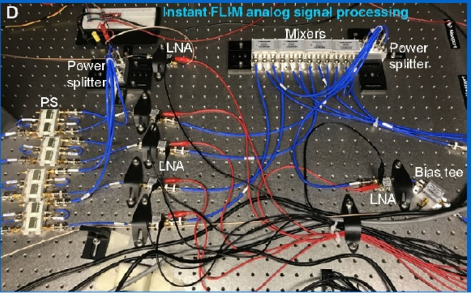

Upgrade a 2-photon microscope with high-speed FLIM for $2352

Fluorescence-lifetime imaging microscopy (FLIM) is a microscopy technique used to measure the lifetime of a fluorophore rather than its intensity. Sensitive to the sample region’s micro-environment, lifetime measurements aren’t limited to measuring molecule concentration like traditional microscopy, but can also indicate environmental effects such as pH or viscosity. Additionally, this technique is not as affected as traditional microscopy by pesky changes in light source brightness, photobleaching, or photon scattering in thick samples.
Yide Zhang, Ian Guldner, Evan Nichols, David Benirschke, Cody Smith, Siyuan Zhang, and Scott Howard have developed a cheap “instant” FLIM solution that can be applied to a two-photon microscopy system for just $2500. Their work is detailed in the paper “High-speed, long-term, 4D in vivo lifetime imaging in intact and injured zebrafish and mouse brains by instant FLIM” . The instant FLIM system eliminates speed limitations, instantaneously generating lifetime images and phasor plots without recording fluorescence decay curves. With off-the-shelf components and the authors’ open-source software, the upgrade costs under $2500.
The bill of materials can be found in the supplementary information (Table S2) and mostly consists of products from ThorLabs and Mini-Circuits. They note that while they spend $685 on cables and adapters, you might be able to find cheaper cables from other vendors. We expect that with a bit of hunting on any given campus you might be able to get away with a sub $2000 upgrade.
The LabView software used to control the FLIM device is hosted on github. The control software can be found at https://github.com/yzhang34/Instant-FLIM-Control and the analysis software can be found at https://github.com/yzhang34/Instant-FLIM-Analysis . While the instructions for how to build the system are not for the inexperienced, the complex software is well and thoroughly documented.